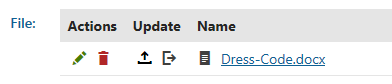
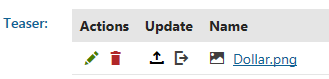

Example - WebDAV browse mode editing
The following example demonstrates how website file management using WebDAV Browse mode actually works. The sample Intranet Portal website is used for the purpose of the example.
Before trying this example on your machine, please make sure that your system meets all requirements, that you have WebDAV settings adjusted properly and that you have mapped a WebDAV network drive.
Editing a CMS.File page type file
Open the Pages application and expand the Company/Internal Policy node in the content tree.
Select the Dress Code page.
Switch to the Form tab.
As Dress Code is a CMS.File page, you can see that it has a Dress-Code.docx file uploaded in its File field.

A CMS.File page
Let's take a look at the page on our network drive.
Open Windows Explorer or any other file manager that you prefer.
Open the WebDAV network drive and browse to content\<your culture>\Company\Internal-Policy.
The Dress-Code page is represented twice in the folder — first as the Dress-Code folder and second as the Dress-Code.docx file. The folder represents the page in the content tree and would contain unsorted attachments if the page had any. The file represents the Dress-Code.docx file uploaded in the page's File field.
Open the Dress-Code.docx file to see how it can be edited.
The Dress-Code.docx file gets opened in a client application (typically in Microsoft Office Word).
Edit the opened file and save your changes using the Save button.
Now open the file from Kentico.
You should see that the opened file contains the modifications that you made to it.
Updating a file in a File field (attachment)
Next, we will try out how the file uploaded in File fields can be replaced with other files.
In the Pages application choose the News/Record Sales in Q3 page in the content tree.
Switch to the Form tab.
You can see a file uploaded in the Teaser File field.

File attached to a pageThis file is displayed in the summary of the News item on the live site.
Open the WebDAV network drive and navigate to attachments\en-US\News\Record-Sales-in-Q3\[NewsTeaser].
You should see that the original Dollar.png file in the folder.
Try copying another image file into the folder.
If you refresh the content of the folder (press F5) after a few seconds, you should see that the original file disappeared. This means that the original file in the File field has been replaced with the newly uploaded one.
The newly uploaded file should now also be visible in the UI.